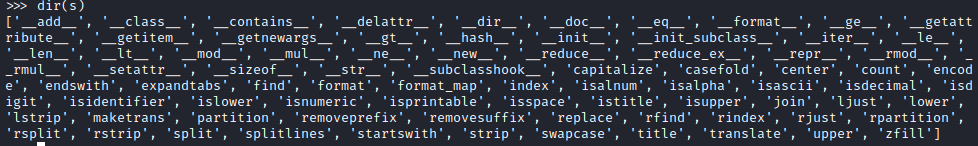
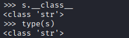
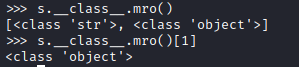
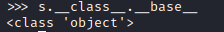
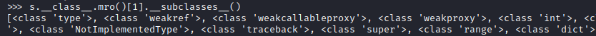

Jinja2: how to manually RCE
Useful Python Methodsfrom fatalerrors.org:
https://www.fatalerrors.org/a/0dhx1Dk.html#:~:text=Implementation%20of%20basic%20classes| No. | Methods | Description |
|---|
| 1. | __class__ | Returns the object (class) to which the type belongs |
| 2. | __mro__ | Returns a tuple containing the base class inherited by the object. Methods are parsed in the order of tuples. |
| 3. | __subclasses__ | Each new class retains references to subclasses, and this method returns a list of references that are still available in the class |
| 4. | __builtins__ | Returns the builtin methods included in a function |
| 5. | __globals__ | A reference to a dictionary that contains global variables for a function |
| 6. | __base__ | Returns the base class inherited by the object <-- (__ base__ and __ mro__ are used to find the base class) |
| 7. | __init__ | Class initialization method |
Hierarchy of Class in Python ◇ s → 'string'
◇ dir(s) → properties and methods of the specified object
 ◇ s.__class__ → string class
◇ type(s) → string class
 ◇ s.__class__.mro()[1] → object class
 ◇ s.__class__.__base__ → object class
 ◇ s.__class__.mro()[1].__subclasses__() → subclasses of object
